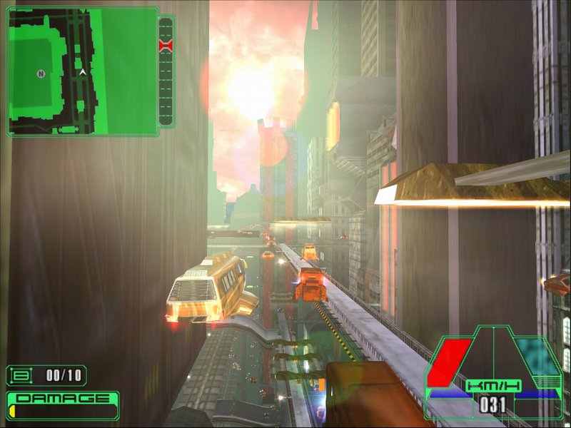
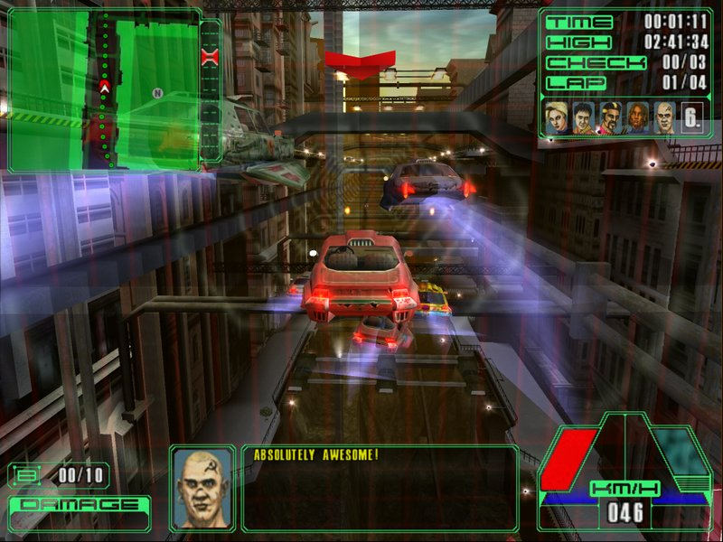
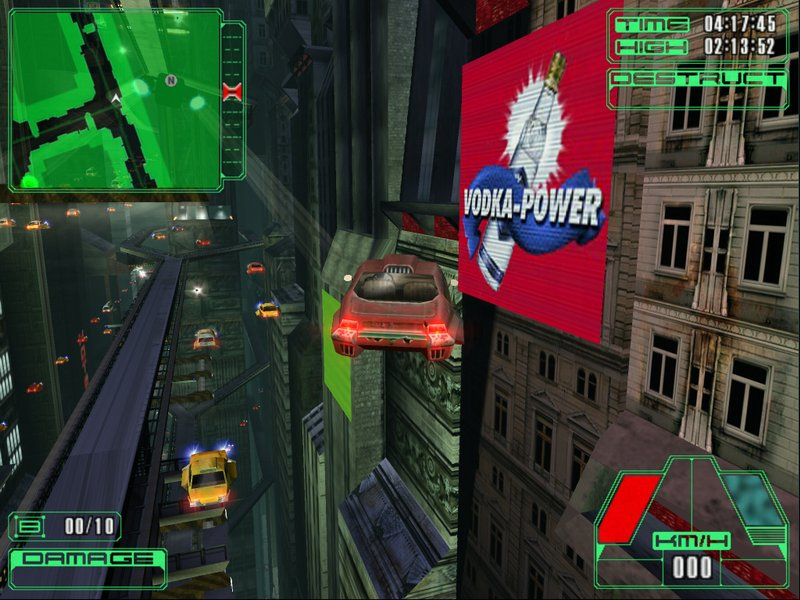

Каждый по-своему представляет будущее: кому-то приходит в голову выжженная радиоактивная пустыня, кишащая мутантами, кто-то мечтает о жизни на морском дне. А кто-то представляет себе огромные мегаполисы, растянувшиеся на сотни километров, тысячи небоскребов, уходящих за облака, миллионы летающих машин, снующих по воздушным "улицам".
Beam Breakers, анонсированный на прошлогоднем E3, предлагает игроку перенестись именно в такой мир. Similis Software, разработчик причисленных к лику виртуальных святынь Sheep и Moorhuhn, уже успела прославиться весьма нестандартными находками, но в случае с Beam Breakers она превзошла сама себя. Появившаяся в апреле демо-версия оказалась совершенно не тем, чего ждали, вместо клона NY Racer мы получили игру, полная версия которой может стать настоящим откровением.
Urban monkey warfare
Установив демо-версию, настоятельно не рекомендую вам сразу же браться за основные миссии. Дело в том, что управление местными автомобилями требует усвоения определенных навыков, недаром разработчики включили в демку туториал. Самое интересное, что удобнее всего управлять не с помощью джойстика или геймпада, а самой обыкновенной клавиатурой. Сложным управление кажется только поначалу, для того, чтобы к нему привыкнуть, нужно немного времени. Потом оно вам вообще покажется идеальным. 
Утро мегаполиса будущего
Но и освоив управление, не стоит спешить в режим кампании, лучше для начала просто полетать по городу, благо, что такая возможность есть. Необходимо осознать то, что Beam Breakers по своей идеологии кардинально отличается от похожего внешне NY Racer. Если творение Cryo представляет собой банальную гоночную аркаду в необычных декорациях, то Similis Software предлагает игру с совершенно иной идеологией. Мир, представляющий собой гигантский мегаполис, наполненный тысячами такси, автобусов и прочих автомобилей, неспешно летящих по своим делам, где игрок не является центром вселенной. По хорошему счету, этому миру плевать на игрока, для него он представляет такой же интерес, как вам копошащийся под ногами муравей. Самое же главное, разработчикам удалось создать город, который выглядит по-настоящему живым, даже Midtown Madness не мог дать подобных ощущений.
| Между прочим... |
| Если говорить откровенно, называть Beam Breakers плагиатом идей "Пятого Элемента" несколько не корректно. При всем уважении к творчеству Люка Бессона хочу ответственно заявить, что до "Пятого Элемента" был, по меньшей мере, один фильм, где мегаполис будущего выглядел именно так. Речь идет о "Судье Дредде" с Сильвестером Сталлоне в главной роли. Вспоминаете? Я знал, что вы это скажете.
|
|
При всем этом мир Beam Breakers достаточно интерактивен, игрок при желании может опрокинуть кадку с деревом, разбить стекло перехода при желании можно сбить любой автомобиль. Если же начать хулиганить, город все-таки начнет реагировать на ваши действия: полет по встречной полосе сопровождается яростным ревом сотен клаксонов, пешеходы при опасном сближении с вашим экипажем рыбкой ныряют на пол бесконечных переходов, не жалея дорогих костюмов.
Как известно, немецкие игры в стиле киберпанк не обходятся без каких-либо революционеров, вспомните тот же Aquanox. Обычно разработчики обходятся эпизодическим показом портрета великого Че, однако Similis Software пошла намного дальше своих коллег: летая по Нео-Йорку, вы обязательно наткнетесь на плакаты советских времен. Особенно колоритно смотрится плакат с изображением Ильича, держащего в руках газету "Правда", по сравнению с ним Чегевара просто не котируется. Для полной гармонии не хватает разве что хорошей музыки от какого-нибудь немецкого индустриального коллектива, KMFDM, к примеру. Пока что музыки в Beam Breakers нет, но это дело поправимое, поскольку есть опция CD Music.

О, маза Раша!
Увы, в этом прекрасном мире все же есть недостатки в виде достаточно четких ограничений по высоте полетов. Дело тут, скорее всего, не в жадности разработчиков, а попытке сохранить системные требования в рамках приличия. Игра не слишком-то скрывает, что для нормальной работы ей нужен GeForce 3, а прорисовка и "оживление" дополнительных уровней города потребовало бы совершенно неподъемной для обычного пользователя конфигурации компьютера.
GTA будущего
Однако не одним лишь дизайном и графикой Beam Breakers привлекает к себе внимание. Первоначальные пресс-релизы Fishtank наводили на мысль, что эта игра станет обычной гонкой с незначительными в вкраплениями в виде дополнительных заданий. На самом же деле, обычные гонки составляют менее трети объема миссий, из которых состоит кампания (в полной версии будет более шестидесяти миссий). Более того, разработчики недвусмысленно дали понять, что гонки их интересуют меньше всего, при создании Beam Breakers они ориентировались на такие вещи, как Midtown Madness и Grand Thief Auto.
Сюжетная линия игры проходит под девизом "Evil is Good": игроку предстоит длинный путь из самых низов общества, в конце которого его ждет звание короля преступного сообщества Нео-Йорка. Для достижения заветной цели хороши все средства, большую часть времени вам придется выполнять задания местных мафиозий. К примеру, первое задание, доступное в демо-версии, заключается в угоне автомобиля, причем вы не должны привести за собой "хвост". Следующее задание еще веселее предыдущего: местный бар отказался платить вашему боссу за "охрану", вам же поручено проучить упрямцев, разнеся стоящие на открытом воздухе столики. Интересно, будут ли в полной версии Beam Breakers такие милые вещи, как киднеппинг или "мокруха"? Разумеется, выполняете вы задания не за "спасибо": по завершении миссии вам выдают новую машину, либо какой-нибудь апгрейд.

Универсальная "заправка"
Ваши противозаконные действия безжалостно пресекаются местной полицией: патрули устраивают засады и кордоны, в погоню устремляются наиболее быстрые машины. На вооружении у полиции находятся разрядники, способные превратить вашу машину в груду мертвого металла. Вообще, погоня полицейских автомобилей за игроком больше всего напоминает загон легавыми волка. На этом фоне несколько странно смотрится абсолютно нулевая реакция полиции на бесчинства игрока, не относящиеся к заданию. Более того, полицейские даже не шелохнутся, если их начать таранить.
Der Futurismus
Несомненно, нас ожидает интересный и самобытный проект, пока что не имеющий аналогов. Similis Software удалось создать мир, поражающий воображение, в реальность которого можно поверить. Будем надеяться, что разработчикам удастся в полной мере воплотить задуманное.